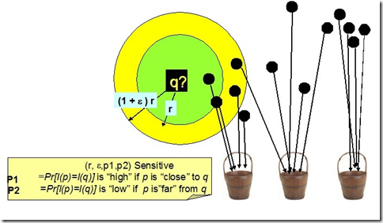

1. 一开始
先从wiki上头截取一段话:
Locality-sensitive hashing (LSH) is a method of performing probabilistic dimension reduction of high-dimensional data.
The basic idea is to hash the input items so that similar items are mapped to the same buckets with high probability (the number of buckets being much smaller than the universe of possible input items). This is different from the conventional hash functions, such as those used in cryptography as in this case the goal is to maximize probability of “collision” of similar items rather than avoid collisions.[1].
Note how locality-sensitive hashing, in many ways, mirrors data clustering and Nearest neighbor search.
LSH(Location Sensitive Hash)，即位置敏感哈希函数。与一般哈希函数不同的是位置敏感性，也就是散列前的相似点经过哈希之后，也能够在一定程度上相似，并且具有一定的概率保证。
2. 给定义
对于任意$ q$, $ p$ 属于 $ S$ ，若从集合 $ S$ 到 $ U$ 的函数族 $ H=\{h_1,h_2…h_n\}$ 对距离函数$ D(\cdot)$，如欧式距离、曼哈顿距离等等，满足条件：
$ D(p,q) \leq randPr(h(p) = h(q)) \geq p_1 $
$ D(p,q) \leq r(1+\epsilon)andPr(h(p) = h(q)) \leq p_1 $
则称 $ D(\cdot)$ 是位置敏感的。
如下图，空间上的点经位置敏感哈希函数散列之后，对于 $q$ ，其rNN有可能散列到同一个桶（如第一个桶）,即散列到第一个桶的概率较大，会大于某一个概率阈值 $ p_1 $; 而其 $ (1+\epsilon)rNN$ 之外的对象则不太可能散列到第一个桶，即散列到第一个桶的概率很小，会小于某个阈值$ p_2$。
LSH图例
3. LSH的作用
3.1 高维下近似查询
相似性检索在各种领域特别是在视频、音频、图像、文本等含有丰富特征信息领域中的应用变得越来越重要。丰富的特征信息一般用高维向量表示，由此相似性检索一般通过K近邻或近似近邻查询来实现。一个理想的相似性检索一般需要满足以下四个条件：
- 高准确性；即返回的结果和线性查找的结果接近。
- 空间复杂度低；即占用内存空间少。理想状态下，空间复杂度随数据集呈线性增长，但不会远大于数据集的大小。
- 时间复杂度低；检索的时间复杂度最好为$ O(1)$ 或 $ O(\log_{}{N})$。
- 支持高维度；能够较灵活地支持高维数据的检索。
传统主要方法是基于空间划分的算法——tree类似算法，如R-tree，Kd-tree，SR-tree。这种算法返回的结果是精确的，但是这种算法在高维数据集上的时间效率并不高。维度高于10之后，基于空间划分的算法时间复杂度反而不如线性查找。LSH方法能够在保证一定程度上的准确性的前提下，时间和空间复杂度得到降低，并且能够很好地支持高维数据的检索。
3.2 分类和聚类
根据LSH的特性，即可将相近（相似）的对象散列到同一个桶之中，则可以对图像、音视频、文本等丰富的高维数据进行分类或聚类。
3.3 数据压缩
如广泛地应用于信号处理及数据压缩等领域的Vector Quantization量子化技术。
总而言之，哪儿需要近似kNN查询，哪儿都能用上LSH.
_扩展1————图像检索和c-NN搜索_
图像检索其基本定义为给定的一个包含n个图像数据集，每个图像可以用一个d维的特征向量来描述，因此整个图像数据集就映射为d维空间的n个点，在此d维空间中用一个相似度度量函数来测量两个图像点之间的距离，对于任意给定的查询点q，需要设计一个数据结构，来快速的返回距离q最近(Nearest Neighbor)的图像点(或者Ranking的多个点)。
当d较小时(10-20)，可采用如kd-tree的结构，但当d较大时(一个Discriminative的图像描述向量通常成百上千甚至万维)，其查询时间将随d指数级增长，这就是通常所说的维数灾难”the curse of dimensionality”，同时d较大时，其所需的存储空间也变的intolerable。因此降维和Approximation NN算法通常会用到当前的检索系统中，ANN搜索就是对于给定的查询点q，若数据集中存在点p距其小于距离R，允许系统返回点p，where $ \Phi(q, p’) = cR$，则称为c-NN搜索。
当前图像检索要求快、准、同时可容易的扩展至大规模数据
- Fast：hashing structure，small code， ANN;
- Accurate: discriminative feature fingerprint;
Scalable: very little memroy.
由此可见，紧凑的fingerprint和有效的hash结构对整个检索系统至关重要,目前的图像检索系统中，常采用Hashing技术将高维的图像特征编码为低维的特征，在映射后的$ S^k$ 空间中采用一定的距离度量进行
.
_扩展2————Approximation Nearest Neighbors (ANN)搜索_
定义Hash函数集合$ H = \{h_i(i = 1,…,k): M^d \rightarrow S^k\} $.
$ M^d$ 是原始的 d 维特征空间，
$ S^k$ 是经hash函数集F散列后的k维空间，根据哈希函数设计的不同，可将Hashing分为data-independent和data-dependent两大类:
1.data-independent hashing包括：Locality-Sensitive Hashing (LSH)，经Hash函数映射后，仍保留原始空间的距离相似度；
2.data-dependent hashing包括：spectral hashing, semi-supervised hashing, Restricted Boltzmann Machine (RBM), Boosting SSC等，引入机器学习算法，基于数据分布设计Hash函数。位置敏感哈希Locality-Sensitive Hashing (LSH)，其基本的思想就是通过哈希函数将输入的高维特征矢量散列至低维特征空间，并满足在原始空间中距离较近的点经过散列之后在低维空间依然距离较近，距离较近的点散列后碰撞的概率要大于距离较远的点碰撞的概率。
4. 方法
4.1 Bit sampling for Hamming distance
最简单的Hash函数，仅适用于原始特征空间是Binary的Hamming空间，即原始的特征向量每一维的取值为{0，1}的特征串，其Hash函数的基本思想就是随机选取d维特征向量中的某一维:
$ H = \{h_i(i = i,…,k) | h(x) = x_i, i \in (1,…,d)\}$
4.2 Random projection
The random projection method of LSH is designed to approximate the cosine distance between vectors.
其Hash函数设计的基本思想就是定义一个随机超平面$ (w,b)$,$ w,b$可看做分别是超平面的斜率和截距(参照二维平面直线的定义)，超平面将整个原始的特征空间划分为两部分(平面的两侧)，用{0, 1}表示，则Hash函数的映射过程为：
$ h(x) = \left\{\begin{matrix}1, w\cdot x + b > 0 \\ 0, else\end{matrix}\right.$
$ w$是d维的法向单位向量，即$ ||w||_2 = 1$，每一个不同的w即定义一个超平面(可令$ b = 0$).
可证明两个特征vector经Hash函数散列后碰撞的概率和其在原始空间的余弦距离成正比，即 $ Pr(h(p)=h(q))=1-\frac{\theta(p,q)}{\pi}$ 是vector $ p,q$的夹角，$ 1-\frac{\theta(p,q)}{\pi}$和余弦距离成正比.
4.3 Stable distributions
Hash函数设计的基本思想也是定义一个随机超平面，不同于4.2之处在于Hash函数将d维的特征矢量散列到[0,r]之间的一个整数而不是{0, 1}二值码，其Hash过程：
$ h(x) = \left \lfloor \frac{w \cdot x + b}{r} \right \rfloor$
w是d维向量，每一维都是一个随机变量，各维之间独立同分布，服从一个Stable Distribution，b是一个[0,r]间均匀分布的随机变量。
稳态分布的定义：
A distribution $ D$ over $ \mathbb{R} $ is called p-stable, if there exists such that for any $ n $ real number $ v_1,…,v_n $ and i.i.d. variables $ X_1,…,X_n $ with $ D $ distribution, the random variable $ \sum_iv_iX_i $ has the same distribution as the variable $ (\sum_i|v_i|^p)^{\frac{1}{p}}X $ where $ X $ is a random variable with distribution $ D $.
简而言之就是若随机变量线性组合的分布与随机变量乘一个$L_p$归一化系数服从同一分布，则此分布即为稳态分布，对于$ p \in (0,2] $，都存在一个稳态分布, 两个常用的Stable Distribution：
- Cauchy distribution: 1-stable即L1稳态，其概率密度函数为$c(x) = \frac{1}{\pi}\frac{1}{1+{x}^{2}} $
- Gaussian distribution: 2-stable即L2稳态，概率密度函数为:$g(x)=\frac{1}{\sqrt{2\pi}}{e}^{-{x}^{2}/2} $
由稳态分布的性质，我们可以看出基于稳态分布Hash函数设计的思想：
$w \cdot x$将d维的向量x映射到一条直线，将此直线划分为r大小等间隔的段，则哈希函数$h(x)$将向量x映射到直线的某一段；
w中每一维${w}_{i}$都是一个稳态分布的变量，因此$w \cdot x$是稳态分布变量的线性组合，因此$w \cdot x$的分布等价于${|x|}_{p} \cdot {w}_{i}$的分布；
由此，可得出对于两个原始空间的向量${x}_{1},{x}_{2}$，其映射后的距离为$({x}_{1}-{x}_{2}) \cdot w$，其分布等价于${|{x}_{1}-{x}_{2}|}_{p} \cdot w$的分布，${|{x}_{1}-{x}_{2}|}_{p}$是原始空间向量${x}_{1},{x}_{2}$之间的距离，只需证明$Pr(h({x}_{1})=h({x}_{2})) \propto 1/{|{x}_{1}-{x}_{2}|}_{p}$，即两个向量经Hash函数映射后碰撞的概率反比于两个向量之间的$L_p$距离。
令$c={|{x}_{1}-{x}_{2}|}_{p}$，$p(c)={Pr}(h({x}_{1})=h({x}_{2}))$，则对于上述两个稳态分布，可得出：
1.Cauchy distribution:
$p(c)=2\frac{\tan^{-1} (r/c)}{\pi}-\frac{1}{\pi (r/c)}\ln (1+(r/c)^2)$
2.Gaussian distribution:
$p(c)=1-2norm(-r/c)-\frac{2}{\sqrt{2\pi}r/c}(1-e^{-(r^2/2c^2)})$
$norm(\cdot)$是正态分布$N(0,1)$随机变量的累积分布。